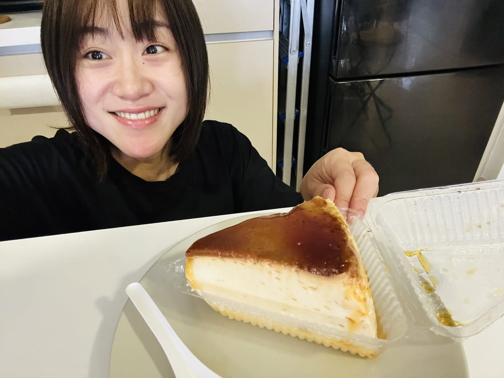
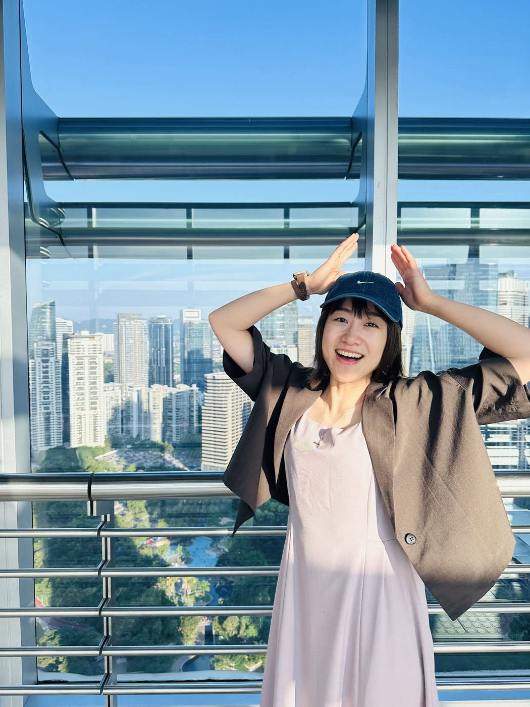
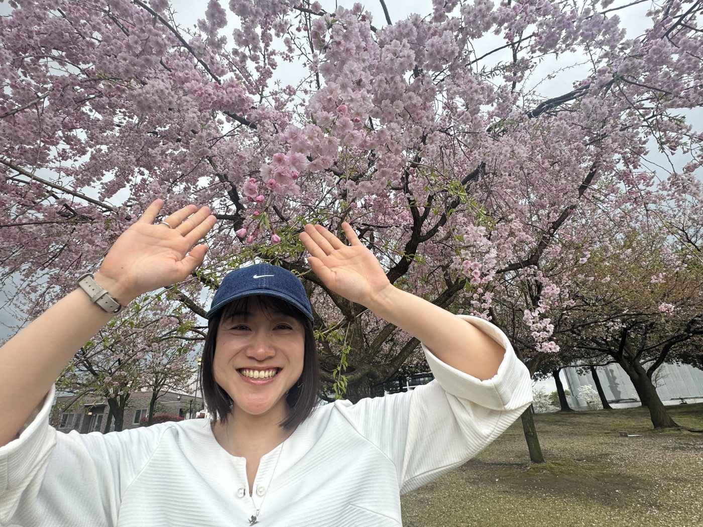
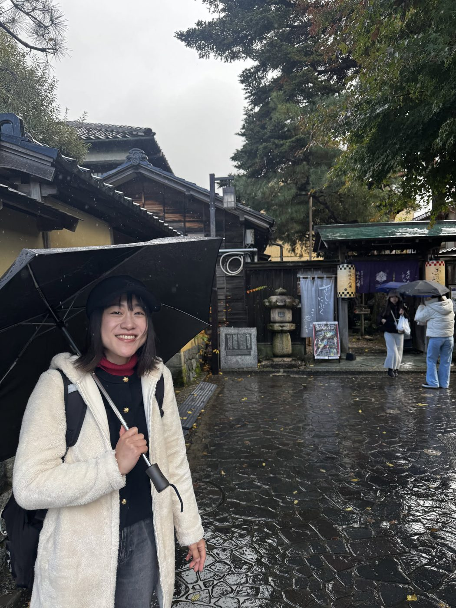

01 · 新橋の夜
Shimbashi Night
Kimono bar-hopping
Evening · about 2.5 h


東京を、ゆりと
As if you were visiting a friend.
Price on requestBookings opening soon
ゆっくり、座れる
01 · 新橋の夜
Kimono bar-hopping
Evening · about 2.5 h


02 · 清澄白河
Museum · garden · lunch
Morning · about 3 h


03 · 神楽坂から新橋へ
& a Shimbashi Evening Hop
Afternoon into evening
Afternoon · about 3.5 h
小さなひととき









料金はお問い合わせください
Price on requestBookings opening soon